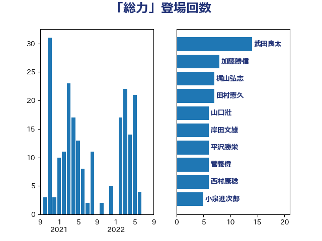

単語「総力」

| 武田良太 | 自由民主党 | 14 回 |
| 加藤勝信 | 自由民主党 | 8 回 |
| 梶山弘志 | 自由民主党 | 7 回 |
| 田村憲久 | 自由民主党 | 7 回 |
| 山口壯 | 自由民主党 | 6 回 |
| 岸田文雄 | 自由民主党 | 6 回 |
| 平沢勝栄 | 自由民主党 | 6 回 |
| 菅義偉 | 自由民主党 | 6 回 |
| 西村康稔 | 自由民主党 | 6 回 |
| 小泉進次郎 | 自由民主党 | 5 回 |
| 小西洋之 | 立憲民主党 | 5 回 |
| 野上浩太郎 | 自由民主党 | 5 回 |
| こやり隆史 | 自由民主党 | 4 回 |
| 安江伸夫 | 公明党 | 4 回 |
| 斉藤鉄夫 | 公明党 | 4 回 |
| 上川陽子 | 自由民主党 | 3 回 |
| 井上信治 | 自由民主党 | 3 回 |
| 小林鷹之 | 自由民主党 | 3 回 |
| 山口那津男 | 公明党 | 3 回 |
| 熊田裕通 | 自由民主党 | 3 回 |
| 室井邦彦 | 日本維新の会 | 2 回 |
| 尾身朝子 | 自由民主党 | 2 回 |
| 柳ヶ瀬裕文 | 日本維新の会 | 2 回 |
| 江島潔 | 自由民主党 | 2 回 |
| 石井啓一 | 公明党 | 2 回 |
| 福重隆浩 | 公明党 | 2 回 |
| 竹内真二 | 公明党 | 2 回 |
| 荒井優 | 立憲民主党 | 2 回 |
| 萩生田光一 | 自由民主党 | 2 回 |
| 赤羽一嘉 | 公明党 | 2 回 |
| ながえ孝子 | 無所属 | 1 回 |
| 三ッ林裕巳 | 自由民主党 | 1 回 |
| 下野六太 | 公明党 | 1 回 |
| 二階俊博 | 自由民主党 | 1 回 |
| 佐藤英道 | 公明党 | 1 回 |
| 吉川赳 | 無所属 | 1 回 |
| 國重徹 | 公明党 | 1 回 |
| 塩村あやか | 立憲民主党 | 1 回 |
| 大西英男 | 自由民主党 | 1 回 |
| 太栄志 | 立憲民主党 | 1 回 |
| 宮内秀樹 | 自由民主党 | 1 回 |
| 寺田静 | 無所属 | 1 回 |
| 山口晋 | 自由民主党 | 1 回 |
| 岸真紀子 | 立憲民主党 | 1 回 |
| 平木大作 | 公明党 | 1 回 |
| 庄子賢一 | 公明党 | 1 回 |
| 末松信介 | 自由民主党 | 1 回 |
| 杉久武 | 公明党 | 1 回 |
| 柴山昌彦 | 自由民主党 | 1 回 |
| 柴田巧 | 日本維新の会 | 1 回 |
| 武部新 | 自由民主党 | 1 回 |
| 沢田良 | 日本維新の会 | 1 回 |
| 熊谷裕人 | 立憲民主党 | 1 回 |
| 熊野正士 | 公明党 | 1 回 |
| 甘利明 | 自由民主党 | 1 回 |
| 田村貴昭 | 日本共産党 | 1 回 |
| 福田達夫 | 自由民主党 | 1 回 |
| 稲津久 | 公明党 | 1 回 |
| 紙智子 | 日本共産党 | 1 回 |
| 細田健一 | 自由民主党 | 1 回 |
| 美延映夫 | 日本維新の会 | 1 回 |
| 西岡秀子 | 国民民主党 | 1 回 |
| 西銘恒三郎 | 自由民主党 | 1 回 |
| 角田秀穂 | 公明党 | 1 回 |
| 谷公一 | 自由民主党 | 1 回 |
| 谷田川元 | 立憲民主党 | 1 回 |
| 足立康史 | 日本維新の会 | 1 回 |
| 足立敏之 | 自由民主党 | 1 回 |
| 進藤金日子 | 自由民主党 | 1 回 |
| 金子恭之 | 自由民主党 | 1 回 |
| 鈴木英敬 | 自由民主党 | 1 回 |
| 鈴木貴子 | 自由民主党 | 1 回 |
| 阿部知子 | 立憲民主党 | 1 回 |
| 階猛 | 立憲民主党 | 1 回 |
| 青木愛 | 立憲民主党 | 1 回 |
| 音喜多駿 | 日本維新の会 | 1 回 |
| 高橋光男 | 公明党 | 1 回 |
| 鳩山二郎 | 自由民主党 | 1 回 |